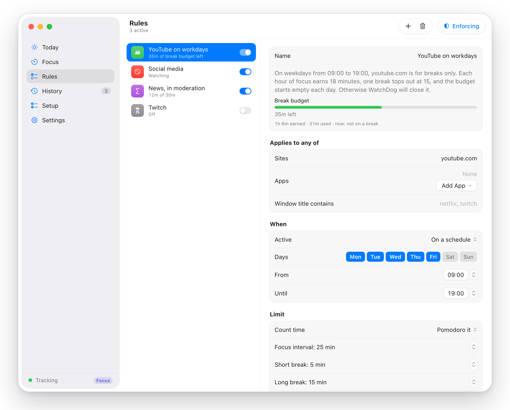
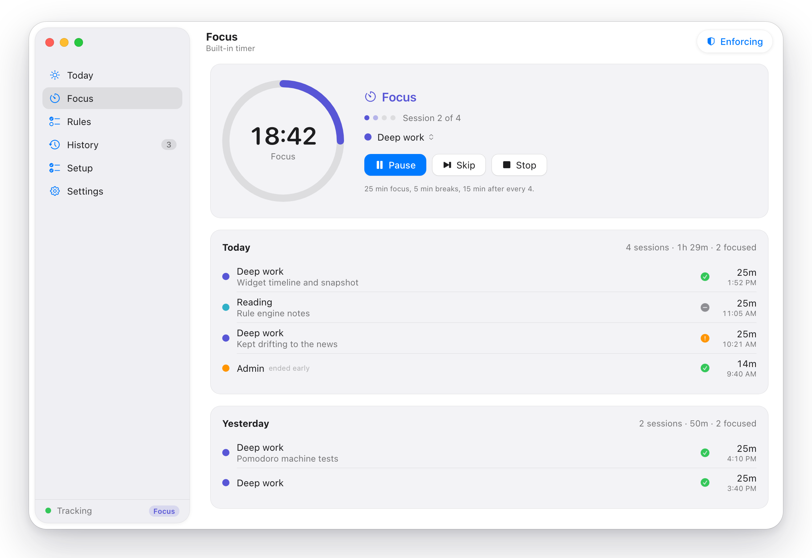
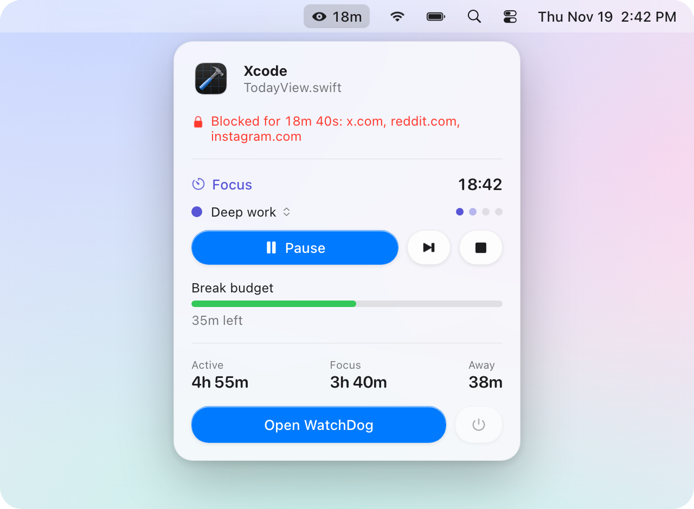
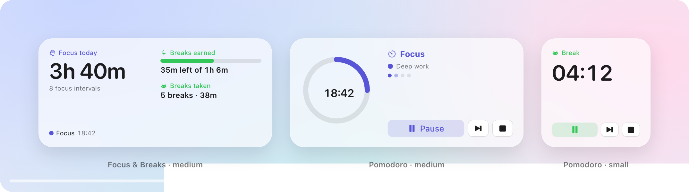
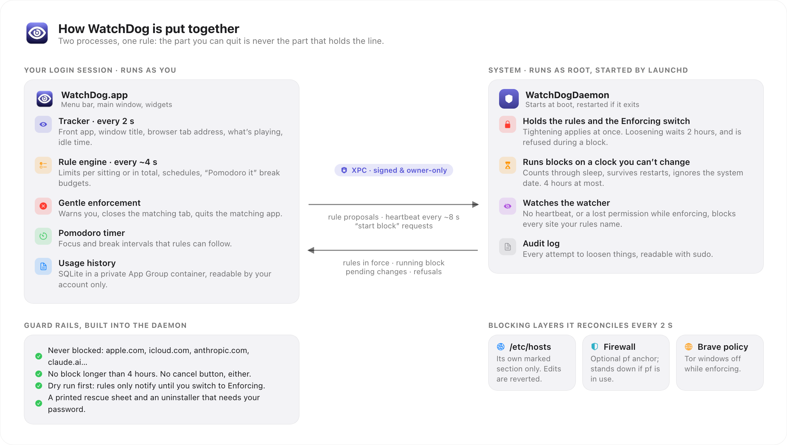
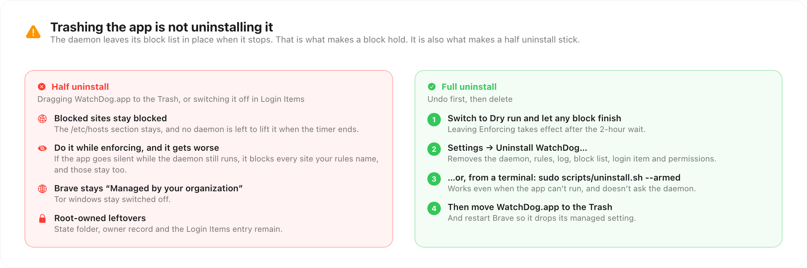

Rules you can read
Every rule is one plain sentence. Match sites, apps or window titles, all day or on a schedule, then warn, close or block.

Free and open source, for macOS
Rules you can read, breaks you earn with focus, and a root daemon that makes stop mean stop.
Decide while you're thinking clearly. WatchDog keeps to it when you aren't.
Everything starts in dry run: rules only notify, so you can tune them for a few days before anything bites.
Every rule is one plain sentence. Match sites, apps or window titles, all day or on a schedule, then warn, close or block.

With a “Pomodoro it” rule, YouTube is for breaks. Each hour of focus earns 18 minutes, and the budget starts at zero each day.

The menu bar shows the number that matters right now: focus time left, or break budget left.

Focus & Breaks and Pomodoro widgets. They see totals and the timer, never window titles, addresses or apps.

Blocks count down on a clock that keeps running through sleep and ignores the system date. A restart can make a block a few seconds longer, never shorter.
A root daemon can't see your windows, and an app can't be trusted to keep a promise. So the app observes and decides, and the daemon enforces and remembers.

No account, no cloud, no telemetry. Your history stays on your Mac, readable only by your account, and stores the site you visited, not the full address.
With your administrator password and a terminal, WatchDog comes off in about a minute. A focus tool that could lock you out of your own Mac would be dangerous.
So there's an uninstaller, and a rescue sheet worth printing before you switch to Enforcing.

There's no download yet. A free Apple ID in Xcode is enough; no paid developer account needed.
Needs macOS 26 and Xcode with the macOS 26 SDK. The script finds your team ID and offers to install XcodeGen. WatchDog 0.1 is an early release that has so far run on one Mac.
git clone https://github.com/seturu/WatchDog.gitcd WatchDogscripts/build.shThat builds the development build: blocks of 5 minutes at most, and only example.com can be blocked. When you trust it, print the rescue sheet and run scripts/build.sh --armed.